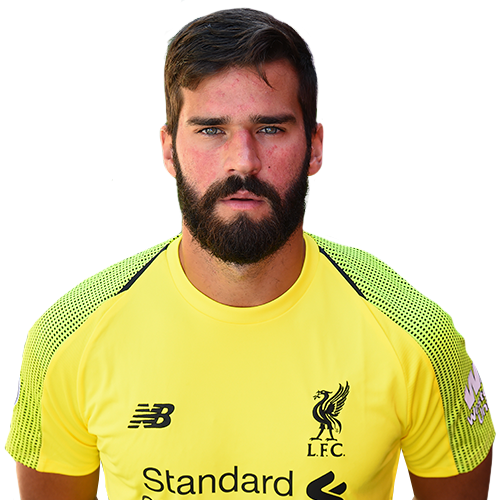

Tre Imponerande Nykommere
Gode signeringar i sommaren?
Før denne sesongen byjra var det mykje penger som blei brukt i overgangsmarkedet , nokre bemerkelseverdige kjøp er Jorginho og Kepa Arrizabalaga til Chelsea, Fabinho og Allison til Liverpool, og Riyad Mahrez til Manchester City. Men blant desse nye overgangane, kven har vore mest imponerande?
- Lucas Torreira
- Allison Becker 
- Jorginho
Den nye Arsenal-trenaren Unai Emery kom til Premier League med ein tropp som trengte ein liten oppussing, spesielt i midtbanen. Ein av dei nye signeringane til Emerey var 22 år gamle Lucas Torreira rundt 25-26 millionar pund. Den uruguayanske midtbane spelaren har brakt litt meir stabilitet til Arsenal sin midtbane saman med den sveitsiske Granit Xhaka. Så langt i sesongen har han truffet på 90% av sine pasningar, sjølv om mesteparten av hans pasningar går enten bakover eller til sida. Til tross for alt dette slepp Arsenal fortsatt sirka 14 skudd på mål kvar kamp i gjennomsnitt, eit problem som Emerey må fikse.
Eit av Liverpool sitt største problem i nylege år har vore keeper-posisjonen, nokon tidlegare keeperar er Simon Mignolet og Loris Karius, med sistnemnde som kan muligens ha kosta Liverpool ein Champions League triumf. Det mest nylege forsøket på å fikse problemet kom i kjøpet av Allison Becker for rundt 56 millionar pund. Så langt i sesongen har han holdt 8 reine bur av 13 kampar, men dette kan også krediteres til Liverpool forsvaret. Men vidare har han også ein redningsprosent på 83%. Med denne nye signeringa, kan Liverpool utfordre Manchester City for Premier League trofeet?
Denne sesongen var usikker for Chelsea, med ny manager i Maurizio Sarri. Ny manager betyr nye taktiker, spesielt frå Antonio Conte sin konservative spelestil til den så kalte «Sarriball», men så langt inn i sesongen har dei kun tapt ein kamp heile sesongen og liggjer på fjerde plass, mykje til takk for Jorginho. Etter 13 kampar har han over 1200 pasningar eller rundt 90 pasningar per kamp, noko som er best i ligaen. Hans defensive statistikkar er kanskje ikkje dei beste med kun 2.5 taklingar og pasningsbrot per kamp, men med andre midtbane spelarar i verdensklasse som N’Golo Kanté. Vil Jorginho hjelpa Chelsea til ein Champions League plass?